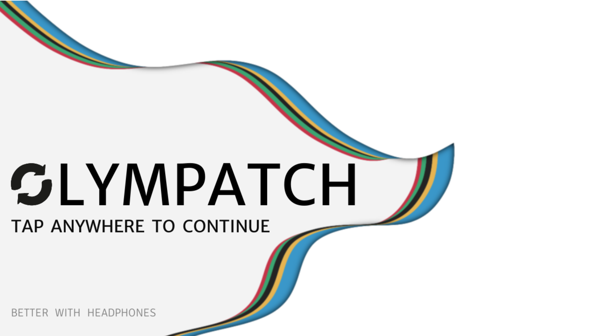
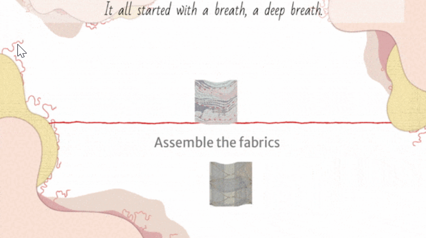
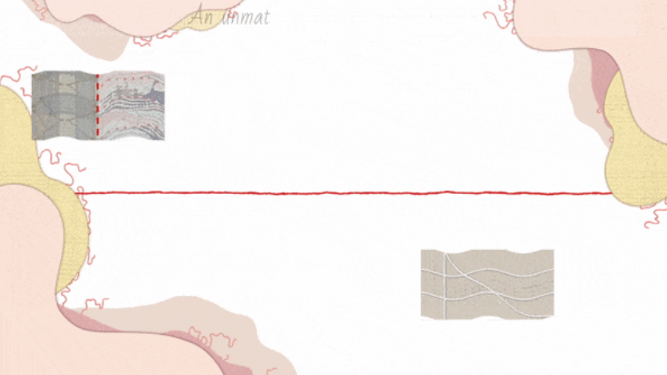

July, 2023
OLYMPATCH
A Godot Game
(For the association Paris Good Fashion)
July, 2023
(For the association Paris Good Fashion)
The main goal of this project is to take advantage of the excitement generated by the presence of the 2024 Olympic Games in Paris to introduce sustainable fashion to the public. It should be able to present concepts and means of sustainable fashion to gamers, raise their awareness and/or make them interested in this subject, without adopting an accusatory or moralizing tone. Therefore, players should be free to continue their research or not, as well as to delve deeper into the topic as part of developing sustainable fashion.
During the one-month period allotted for our internship, our team consisted of two specialized developers. In order to optimize operational efficiency during the project's production phase, we divided the tasks. In this context, my teammate focused on game mechanics, the game loop, and various graphic integrations. On my part, my focus was on implementing global systems, including the sound management system, procedural animation activation, and orchestrating the narrative progression.
Godot posed a challenge despite its simplicity, as none of the team members had prior experience with it. Therefore, during the pre-production phase, we dedicated time to familiarize ourselves with this tool, conducting various tests to confirm that our choice aligned with our development goals.
Numerous tutorials are available to learn the specifics of Godot. Leveraging our knowledge of other game engines (Unity, Unreal Engine) and identifying certain similarities, we were able to adapt and share our insights with the rest of the team, particularly in areas related to sound, graphics, and animation integration.
Prior to the production phase, a decision was made to exclude the use of middleware for sound integration (such as FMod or Wwise), opting instead for a direct approach using Godot's built-in tools. This decision was initially made to deepen our understanding of sound integration in Godot and facilitate learning during the game design process. Subsequently, this approach was maintained to address optimization challenges that could be exacerbated by using middleware.
Relying exclusively on Godot's tools proved insufficient for integrating certain sounds using specific methods. Therefore, we chose to use a script (singleton) that plays sounds at predetermined locations through methods that manipulate sound files. These methods were employed to achieve smoother transitions, such as crossfading effects (fade in/out) or crossfades between two audio tracks.
During the game's development, we undertook additional procedural animations on images. Exploring the available tools in Godot, we opted for the "in-betweening" animation technique, which involves interpolating images. In the context of Godot, this technique entails creating instances of objects (tween) that gradually vary the value of an attribute, typically ranging from 0 to 1, over a specified duration. This mechanism was employed to achieve crossfades of images, both at a global level (modifying the image's overall transparency) and selectively using a specific Shader.


